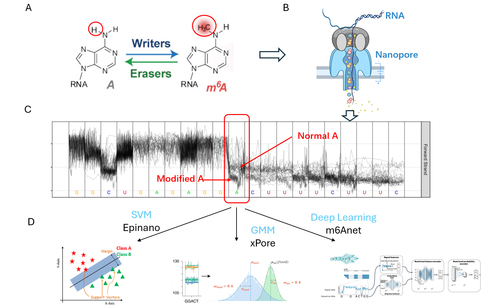

Modification detection benchmark
From the pooled signal segments aligned to one genomic site, decide whether the central base carries a modification. Ground truth comes from orthogonal short-read assays, and the task is still far from solved.

Panel A shows the difference between adenine (A) and N6-methyladenosine (m6A). After Nanopore sequencing (B), the current distributions of unmodified and modified A separate (C), and machine-learning or deep-learning models classify the pooled signal segments at each site (D). NanoBaseLib benchmarks two modifications, m6A and m5C.
m6A results on mESCs_eligos
Six baselines against three independent ground truths. m6Anet, a multiple-instance-learning neural network, is best on every ground truth; SegPore and Nanom6A follow. Precision-recall AUCs below 0.5 across the board show how imbalanced and difficult site-level detection remains.
| Model | ROC AUC ↑ | PR AUC ↑ | ||||
|---|---|---|---|---|---|---|
| miCLIP | miCLIP2 | MeRIP-seq | miCLIP | miCLIP2 | MeRIP-seq | |
| m6Anet | ||||||
| SegPore | ||||||
| Nanom6A | ||||||
| Epinano | ||||||
| MINES | ||||||
| Tombo (de novo) | ||||||
Test dataset: mESCs_eligos (mouse embryonic stem cells, Mettl3 wild type vs knockout). Bars are scaled 0–1; ★ marks the best model per column.
m5C results on ecoli_eligos
In the in-vitro-transcribed E. coli data every cytosine of IVT_m5C is modified and none in IVT_normalC, which gives a clean site-level ground truth. CHEUI-solo clearly outperforms both Tombo modes.
| Model | ROC AUC ↑ | PR AUC ↑ |
|---|---|---|
| CHEUI-solo | ||
| Tombo (alternative) | ||
| Tombo (de novo) |
Ground truth acquisition
m6A. Modification sites and rates come from short-read assays in which an antibody against the modification pulls down modified fragments: MeRIP-seq (Meyer et al., 2012), miCLIP (Linder et al., 2015) and miCLIP2 (Körtel et al., 2021). Each assay is used as a separate ground truth because they disagree with one another.
m5C. Synthetic RNA in which every cytosine was replaced with m5C during synthesis, so all C positions are modified; the matching unmodified synthesis provides negatives.
Evaluation metrics
Given the predicted modification state over all test sites and the ground truth, we compute sensitivity, specificity, precision and recall, and summarise with the area under the ROC curve and the area under the precision-recall curve. The benchmark files (site lists, predictions and labels) are in rna_mod_detection/ on GitHub, together with the plotting scripts.
Baseline models
| Model | Version | Code | Method | Scope |
|---|---|---|---|---|
| m6Anet · paper | 1.0 | github.com/GoekeLab/m6anet | Multiple-instance learning, MLP | m6A only |
| CHEUI · paper | - | github.com/comprna/CHEUI | CNN | m6A and m5C |
| Epinano · paper | 1.2.0 | github.com/novoalab/EpiNano | SVM on base-calling error features | - |
| MINES · paper | - | github.com/YeoLab/MINES | Random forest | m6A only |
| Nanom6A · paper | 2.0 | github.com/gaoyubang/nanom6A | XGBoost | m6A only |
| SegPore · paper | 1.0 | github.com/guangzhaocs/SegPore | Gaussian mixture model on segmented signal | - |
| Tombo | 1.5.1 | nanoporetech.github.io/tombo | Statistical test (de novo / alternative model) | - |
m6Anet and CHEUI are deep-learning methods; Epinano, MINES and Nanom6A are classical classifiers on hand-crafted features; SegPore fits a Gaussian mixture to segmented signals; Tombo performs a statistical test either de novo (against a canonical model) or with an alternative, modification-aware model.
References
- Shi, H., Wei, J. & He, C. Where, when, and how: context-dependent functions of RNA methylation writers, readers, and erasers. Molecular Cell 74, 640–650 (2019).
- Liu, H. et al. Accurate detection of m6A RNA modifications in native RNA sequences. Nature Communications 10, 4079 (2019).
- Pratanwanich, P.N. et al. Identification of differential RNA modifications from nanopore direct RNA sequencing with xPore. Nature Biotechnology 39, 1394–1402 (2021).
- Hendra, C. et al. Detection of m6A from direct RNA sequencing using a multiple instance learning framework. Nature Methods 19, 1590–1598 (2022).
- Acera Mateos, P. et al. Prediction of m6A and m5C at single-molecule resolution reveals a transcriptome-wide co-occurrence of RNA modifications. Nature Communications 15, 3899 (2024).
- Meyer, K.D. et al. Comprehensive analysis of mRNA methylation reveals enrichment in 3′ UTRs and near stop codons. Cell 149, 1635–1646 (2012). · Linder, B. et al. Nature Methods 12, 767–772 (2015). · Körtel, N. et al. Nucleic Acids Research 49, e92 (2021).